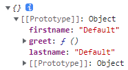

Object.create and Pure Prototypal Inheritance
在前一堂課介紹了 JavaScript 模仿其他程式語言透過 class 定義並創造 object 的方式 - function constructor，接下來將介紹一個 JavaScript 獨有且瀏覽器預設就有的創造 object 方式 - Object.create。
首先看到一段範例如下:
我們創造了一個含有屬性與方法的物件 person ，並在方法中取得並回傳屬性值
1 | var person = { |
但如果方法中指向物件屬性的 this 被忽略了，在方法執行時，因為當前函式的 Execution Context 找不到該變數，便會向外找向 Global execution context，導致因為全域環境沒有這個變數結果出現 error。
1 | var person = { |
Object.create
在 JavaScript 中，有一種瀏覽器預設的方式來建立物件，那就是 Object.create()，首先我們同樣先建立一個物件 person，接著透過 Object.create() 建立另一個物件 john ，並把物件 person 作為參數帶入
1 | var person = { |
當我們透過 console.log 查看物件 john 時，會發現得到一個空物件，並將 prototype 指向作為參數帶入的物件 person。

因為新建立物件 john 的 prototype 指向原物件 person，所以我們可以直接在 john 之下使用 person 的屬性和方法
1 | console.log(john.firstname); // Default |
如果我們希望自定義 john 的屬性，也可以直接加上去，因為當我們呼叫物件的屬性和方法時，在找不到的情況才會找向 prototype
1 | john.firstname = "John"; |
透過這種方式建立物件並繼承原物件我們就稱為 Pure Prototypal Inheritance
polyfill
上述透過 Object.create() 建立物件繼承的方式不僅簡潔易懂，還可以彈性的覆蓋或新增屬性和方法，但如果遇到需要支援舊瀏覽器的專案時，可能會有無法使用 Object.create() 的情況，接下來就讓我們談談一個名詞 - polyfill。
polyfill: 透過程式碼讓我們新增舊環境下缺少的特性
聽起來有點複雜，讓我們直接透過上方的 Object.create() 來了解這個概念 ; 首先判斷這個環境有沒有這個特性，如果有就不用做任何事，沒有的我們就透過程式碼幫它補上原本預期要做到的事 ; 首先確認是否只有傳入一個參數，接著新增一個空函式 F 做為 function constructor，再把它的 prototype 指向傳入的物件 o，並回傳 new F() 來創造一個 prototype 指向 o 的空物件，如此一來就和 Object.create() 達到相同的目的了。
1 | if (!Object.create) { |